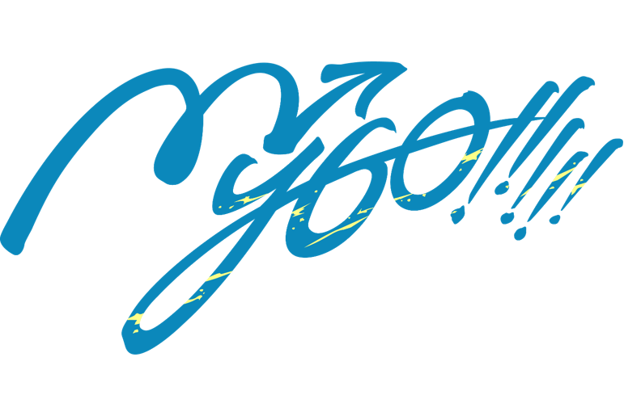

01
自由移动与缩放
拖动角色到桌面的任意位置，并随时调整到适合你的尺寸。
她能看见你的屏幕，理解你正在做什么，调用工具帮你完成任务， 也会记住你们共同经历过的事。
FEATURE DEMOS
从感知、理解到行动，MurasamePet 将多模态模型与本地工具连接起来， 让角色真正参与到你的桌面生活中。
DESKTOP COMPANION
拖动角色到桌面的任意位置，并随时调整到适合你的尺寸。
组合外貌、性格与自定义设定，生成属于你的专属角色。
VISION & ACTION
读取当前屏幕语境，并自主使用浏览器搜索补全信息。
用视觉模型找到目标文件，获得确认后安全完成整理。
按需调用摄像头拍照，让多模态模型理解现实场景。
IDENTITY & MEMORY
把重要对话与桌面活动写入记忆，让下一次相遇延续上次的故事。
通过角色卡迁移身份设定，把熟悉的角色带到另一台电脑。
BEHIND THE CHARACTER
MurasamePet 不是一个停留在聊天窗口里的角色。她通过桌面视觉获得上下文， 由 Agent 编排本地工具执行任务，再用记忆系统维持长期、连贯的关系。
探索项目实现
OPEN SOURCE PROJECT
项目采用 Python、PyQt、Computer Vision 与 OpenAI 兼容接口构建。